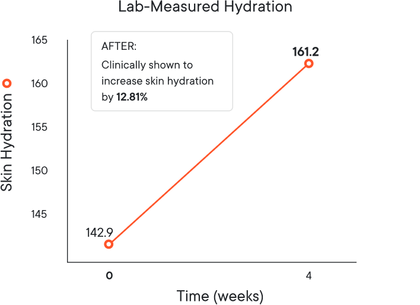
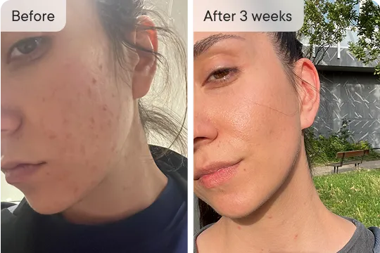
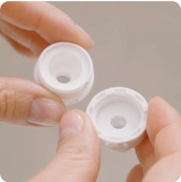
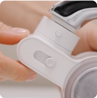
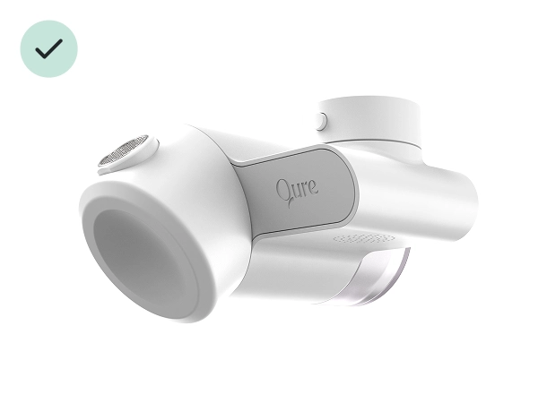

Healthy skin starts with your water. The Qure Faucet Filter helps reduce harmful impurities that can cause dryness, irritation, and discomfort. By filtering your tap water, you're creating the perfect canvas for the rest of your skincare products and helping your skin stay hydrated and happy.
The Qure Faucet Filter is third-party tested to meet NSF standards for water filtration performance.
How It Works
Our Triple-Filtration System helps reduce up to 99% of chlorine, heavy metals, and other contaminants in your water.
Here's what happens:
Water passes through our triple-filtration system
Impurities get trapped in the specialized filtration media
Clean, filtered water flows through your faucet
The result? Water that's gentler on your skin, without the stuff that can strip away natural moisture.
What’s Included In The Box
Inside the box, you'll find:
The Qure Faucet Filter with initial filter cartridge (lasts up to 3 months)
Tools for installation, including a bubbler wrench, thread adapters, and silicone rings
Research has shown tap water is contaminated with over 320* chemicals that your skin is absorbing daily. These micro-contaminants in water can clog pores, dry out and irritate sensitive skin.
Meet the Qure Faucet Filter
Great skin begins with the source – the water you use daily. The Qure Faucet Filter effectively reduces harmful skin irritants that can affect your skin's health and appearance.
Measured improvement in skin hydration after just 4 weeks
An independent user study with 30 participants, supported by third-party skin hydration measurements, showed improvements in measured skin hydration after 4 weeks of daily use of the Qure Faucet Filter.

100%
experienced visibly thicker hair strands after 16 weeks
90%
showed improvements in hair density and thickness
90%
saw a visible increase in active growth-phase hairs
Testing conducted by an independent laboratory. Results based on user perception and instrumental measurements of daily use over 4 weeks.
The results are crystal clear
Kim L.
Verified customer
Source of my unclear skin
“I didn’t realize how big impact water has on our skin... I almost got used to my skin never getting better than mediocre, but this Water Filter is a game changer in my skincare routine.”
Hanna L.
Verified customer
Hydrated more than ever
“I never had major issues with skin before I moved. Then I started to get irritation and my makeup would look cakey cause my skin always felt so dry no matter what moisturizer I used. I didn't change anything in my skincare routine except filtered water. I'm never washing my face with anything less than Q-urified water because my skin feels so much better.”

Josie K.
Verified customer
Dryness gone
“My skin looks much clearer thanks to Qure! I use the LED mask and water filter daily and...my complexion looks so much smoother and less red! My skin feels soft and hydrated. I can actually walk out of the house without makeup now. THANK YOU QURE!”
Trusted and Recommended by Experts
“Harsh water can definitely damage your skin on daily basis and it impacts everything you are doing with your skincare"
Dermatologist Reviewed
Why It Works
Our triple filtration technology filters the water to remove heavy metals and purify.
Carbon Fiber Layer
Removes up to 99% of chlorine which can reduce dry and irritated feeling skin leaving skin and hair looking healthier.
PP Filter
Captures larger particles such as dirt, rust, and sediment, providing the first stage of filtration.
NOK Ultra Filter
Japan-made, top-range ultra-filter designed to reduce certain microorganisms and other microscopic particles through physical filtration, with filtration media rated to capture particles as small as 0.01 μm.*
*Based on laboratory testing. Performance may vary depending on water quality and usage.
ASP-Descaler
Reduces limescale buildup by preventing the accumulation of hard water minerals which can help to protect your shower system.
Remove faucet aerator. Simply attach and twist it off using the key for removal.

Fit
Find the faucet thread accessory which best fits your faucet size.

Secure
Clip Qure Faucet Filter onto the faucet. Once you hear it click it is installed. Turn the toggle button to “Q” mark on the filter and enjoy healthier, clearer skin!
Adjust the flow and angle
Our patented 360° nozzle lets you control the direction of your filtered water with ease—perfect for face washing, even in smaller sinks. It rotates smoothly to fit your space, your routine, and your skin.
Covered by our Lifetime Warranty
Your purchase is protected for life and comes with a 30-day money-back guarantee
Choose from two settings
Why choose Qure?
With the Qure Faucet Filter, you get the best science-backed, dermatologist-approved solution to filtered water at home for better skin.

Qure Faucet Filter
Reduces chlorine and heavy metals
Patented 360° nozzle
Made with advanced filtration
Customizable water flow
Backed by a lifetime warranty
vs
Alternative Filters
Reduces some chlorine and metals
Static nozzle
Standard filtration
No customization options
Limited or no warranty
*Based on laboratory testing under controlled conditions. Performance may vary depending on water quality and usage.
Have questions?
How does hard water harm my skin?
Facial skin is more sensitive than your skin anywhere else. Your skin barrier is like a protective shield against outside threats. But the stuff in tap water can harm it, leading to:
Dry and Damaged Skin: Tap water can strip away your skin's natural oils, leaving it dry and damaged.
Skin Irritation: It might also cause skin irritation, making it sensitive and red.
Premature Aging: The chemicals in tap water can even speed up the aging process, causing wrinkles and fine lines.
What is hard water?
Hard water is water that contains a high quantity of dissolved minerals (like calcium and magnesium). Where soft water has been treated, so that the only ion remaining is sodium. When rainwater falls, it is naturally soft.
However, as water makes its way through the ground and into our waterways, it picks up minerals like chalk, lime, calcium and magnesium and becomes hard water. Hard water is to blame for dishes with spots, dingy looking clothes, and residue and soap scums in bathrooms. Soap and cleansers are also less effective with hard water due to its reaction to the magnesium and calcium, which makes the lather not as rich and bubbly and leaves hair feeling sticky and dull.
What does the Qure Faucet Filter remove?
The Qure Faucet Filter improves your tap water by reducing skin irritants like chlorine, heavy metals, micro-organisms, and more.
What skin types will benefit from the Qure Faucet Filter?
Every skin type! Especially helpful for anyone experiencing sensitive skin, premature aging, dry skin, and acne. By reducing irritants and softening the water, it helps maintain skin hydration and minimizes redness, leaving your skin balanced and healthy.
Is it compatible with all faucets?
The Qure Faucet Filter fits 99% of standard faucets with a circular removable aerator and includes adaptors for different sizes. We recommend checking your faucet type before purchase. It won't fit square or oval faucets, showerhead faucets, induction styles, pull-outs without detachable aerators, or non-threaded pipes under 15mm.
Can I turn off filtered water?
Yes! The Qure Faucet Filter has the option of switching off filtered water. You can turn on and off the purified/tap water by switching the toggle button to “Q” for purified water, and to the tap symbol for unfiltered water.
How easy is it to install?
The Qure Faucet Filter is designed for easy, tool-free installation. It fits most standard faucets, so you can quickly start washing with clean, filtered water.
Why should I subscribe?
Regularly replacing your Qure Faucet Filter ensures it continues to effectively remove chlorine, heavy metals, and impurities from your water. Over time, the filtration media becomes saturated, reducing its ability to provide clean, skin-friendly water.
By subscribing, you prevent buildup of contaminants that can diminish the filter’s effectiveness, and consistently reduce exposure to harmful chemicals that cause hair and skin irritation and dryness.


 Kim L.
Kim L.

 Hanna L.
Hanna L.